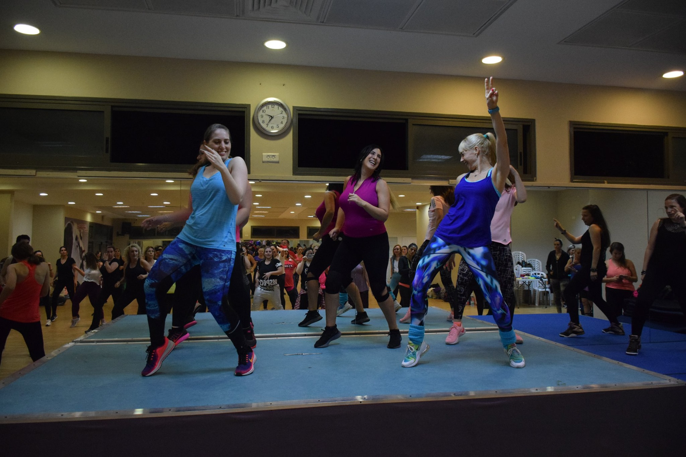
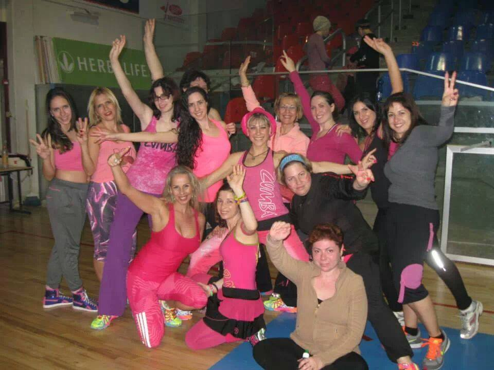
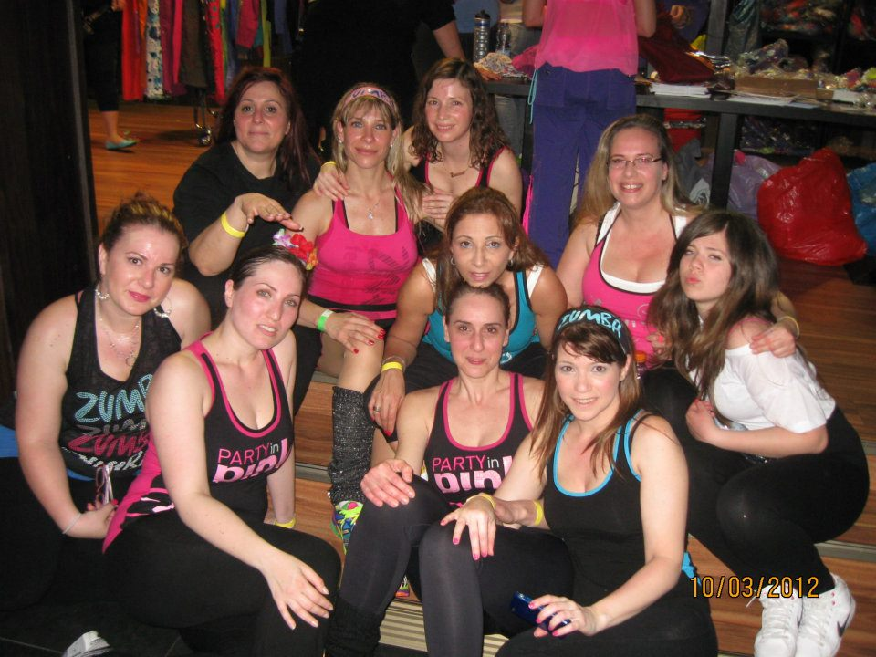

Zumba is a fitness program that involves cardio and Latin-inspired dance.
It was founded by Colombian dancer and choreographer Beto Pérez in 2001,
It currently has 200,000 locations, with 15 million people taking classes weekly,
and is located in 180 countries.[2] [3]Zumba is a trademark owned by Zumba Fitness, LLC.
Zumba was created in the 1990s by dancer and choreographer Beto Pérez, an aerobics instructor in Cali, Colombia.
After forgetting his usual music one day, and using cassette tapes of Latin dance music (salsa and merengue) for class,
Pérez began integrating the music and dancing into other classes, calling it "Rumbacize".
In 2001, Pérez partnered with Alberto Perlman and Alberto Aghion to launch Zumba,
and the trio released a series of fitness videos sold via infomercial.
Pérez decided on the word "Zumba" because of its similarity to the word "rumba",
the Cuban musical genre. Pérez and his partner began to replace the first letter of "rumba" until they landed on "sumba",
and Pérez ultimately decided to spell it with the letter 'z' because he liked the fictional character Zorro when he was a child.
In 2012, Insight Venture Partners and the Raine Group invested in the venture.
The company expanded into class instruction, and by 2015, according to Perlman,
there were 14 million Zumba students in 186 countries.
Zumba is alive and kicking in Israel! Nearly 1,000 Zumba instructors dance with thousands of students every week,
whether in Zoom classes, parks, or fitness studios.
It's all coordinated and managed by Mario Gutierrez,
the master of Zumba and the official presenter of Zumba in Israel.
Part of the vision is to turn Zumba instructors and trainees into one big supportive and close-knit community.
In recent years, countless national Zumba events have been organized, including annual conferences,
participation in foreign conferences, and charity events.
Zumba instructors form the main foundation of this community and are the best ambassadors to the world!

Our Zumba world is different and special from anything else you've ever experienced!
Because for us, Zumba is not just a sport.
It's an hour of escape, disconnection, an hour for ourselves,
instead of psychological treatment, a meeting with girls who have become friends...
An instructor who became a mentor, and a lesson that brought so much happiness to so many people...
So no wonder we want to be together all the time and not miss anything?
What is so special about Zumba?
In my opinion, it's mainly the fact that it has succeeded in doing
something that many other sports fields have not - getting people out of the house and keeping them engaged in physical activity...
Shhh, don't tell anyone!! But Zumba is actually an aerobic workout for everything!!
It raises your heart rate, makes you sweat, works on coordination and muscles in the body...
But don't let it ruin the fun of dancing for you!

My love affair with Zumba started 12 years ago when I first heard about it.
Intrigued, I decided to attend a trial lesson, and from that moment on, I was hooked.
Zumba classes are my "me time" - a chance to move to the rhythm of amazing music and connect with like-minded individuals who share my passion for dance.
Over the years, I've made some incredible friends through Zumba, and it's been an incredible journey.
If you're looking for a fun and exciting way to exercise, I highly recommend trying out Zumba classes in your area.
Who knows, you may just fall in love with it like I did!

"